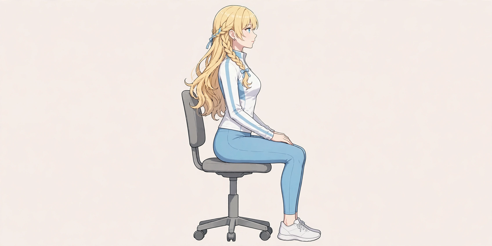
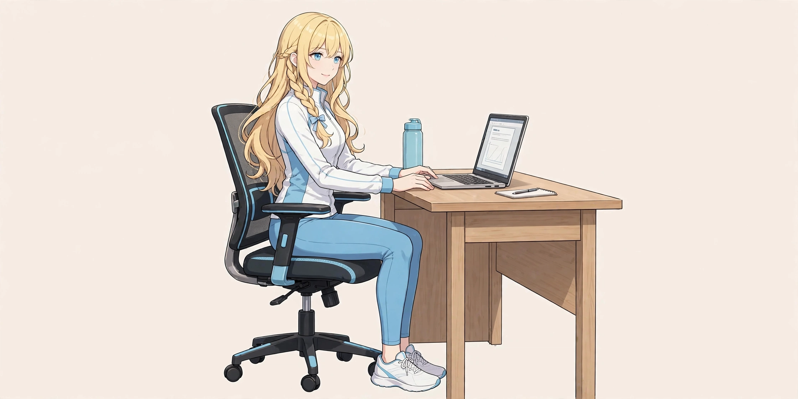

座り姿勢の見え方｜デスクでの座り方（見え方）

やり方1：骨盤を立てて座る（図1）
- 椅子に深く座り、お尻の骨（坐骨）で座面を感じるようにします
- 腰の後ろに手を当てて、骨盤が立っているか確認します。腰が丸まっていると、手のひらに腰が沈む感じがします（図1）
- 背筋を伸ばして、肩の力を抜きます。胸を張るのではなく、頭のてっぺんを上に引くイメージです
- 息を吐きながら5秒保って、ゆっくり呼吸を続けます

やり方2：椅子の高さと足裏の置き方（図2）
- 椅子の高さを調整して、膝が約90度になるようにします。膝が上がりすぎると太ももが圧迫され、下がりすぎると腰が丸まります（図2）
- 足裏全体が床につくか確認します。つま先だけがついているときは、椅子が高すぎる合図です
- 足裏が床につかない場合は、足台や厚い本を置いて調整してください。無理に背伸びして座らないこと
- 肘がデスクに自然に置ける高さも目安にします。肩が上がってしまう高さでは、首や肩が疲れやすくなります

服の見え方との関係
骨盤が倒れて背中が丸まると、ブラウスやジャケットの背中に横ジワが入り、シャツの裾も出やすくなります。座り姿勢が整うと、背中のラインがきれいに見え、ジャケットの肩の位置も安定します。服側の選び方は巻き肩・猫背が気になる人の羽織りものの選び方と猫背でジャケットが決まらない人のアウターの選び方にまとめています。座り仕事でシワが気になる人は座り仕事でもシワになりにくいパンツの選び方と座りっぱなしの日も楽なワイドパンツの選び方もあわせてどうぞ。
座りっぱなしの日のリセット（1時間に1回立つ）
姿勢を整えても、同じ姿勢で座りっぱなしだと、体は固まってきます。1時間に1回は立って、肩甲骨をゆっくり動かすのがおすすめです。立ったときに、両腕を後ろで組んで胸を開く、肩をぐるりと回す、首をゆっくり左右に倒す、の3つを各5回ずつ行ってください。デスクワーク後の首・肩のこわばりが気になる人は首・肩のこわばりをリセットにまとめています。腰の重だるさが気になる人は腰の重だるさケアもあわせてどうぞ。立って歩くときは、コップに水を注ぎに行くなど、仕事の流れに組み込むと続けやすくなります。
デスクまわりの整え方（モニター・肘・腰）
座り方だけでなく、デスクまわりの高さも姿勢に響きます。モニターは、目線のやや下に画面の上端が来る高さが目安です。高すぎるとあごが上がり、低すぎると首が前に出ます。肘は、デスクに置いたときに肩が上がらない高さにします。肘掛けがある椅子なら、肘掛けの高さも調整してください。腰の後ろに小さなクッションや丸めたタオルを入れると、骨盤が倒れにくくなります。クッションが厚すぎると反対に腰が反るので、薄めのものから試してください。ノートパソコンを使っている人は、画面が低い位置になりがちです。台にのせて高さを上げると、首の負担が軽くなります。
1日の中でのチェックの仕方
座り姿勢は、朝は整っていても、夕方になると崩れてきます。1日の中で2回、朝と夕方にチェックする習慣をつけるのがおすすめです。チェックの仕方は簡単です。まず、椅子に座ったまま、腰の後ろに手を当てて骨盤の向きを確認します。次に、足裏が床についているか、膝が約90度かを確かめます。最後に、肩の力を抜いて、深呼吸を1回します。スマートフォンで横から写真を撮ると、姿勢の変化がよく分かります。写真を撮るときは、普段どおりに座ってください。意識しすぎると、いつもの姿勢と違ってしまいます。夕方に崩れていると感じたら、椅子の高さをもう一度調整してみてください。疲れている日は、無理に長時間保とうとせず、立ってリセットする回数を増やす方が続きます。
この記事のテーマに合う用品


あわせて読みたい：トレーニング用品一覧／デスクワーク後の首・肩のこわばりリセット／腰の重だるさケア
NEXT — 次に読む背中合わせの姿勢チェックと深呼吸｜ペアストレッチ入門